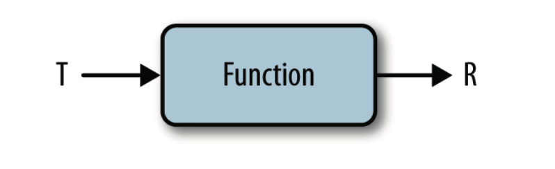
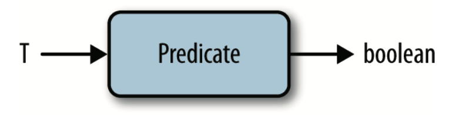
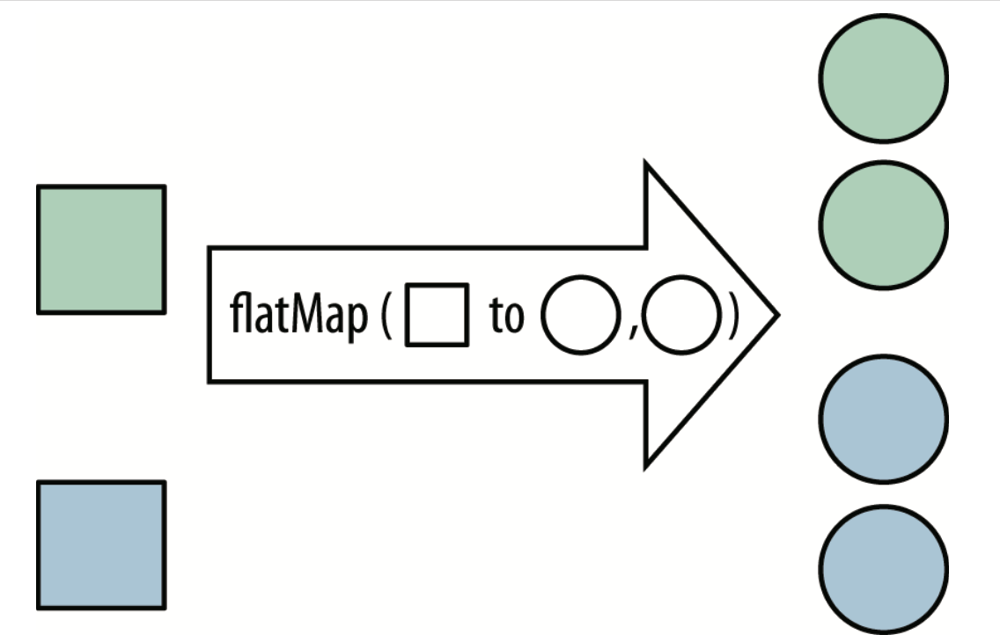

Java弱引用
Java中存在四种引用，它们由强到弱依次是：强引用、软引用、弱引用、虚引用。下面我们简单介绍下除弱引用外的其他三种引用：
强引用（Strong Reference）：通常我们通过new来创建一个新对象时返回的引用就是一个强引用，若一个对象通过一系列强引用可到达，它就是强可达的(strongly reachable)，那么它就不被回收
弱引用（Weak Reference）：弱引用的对象拥有更短暂的生命周期。在垃圾回收器线程扫描它所管辖的内存区域的过程中，一旦发现了只具有弱引用 的对象，不管当前内存空间足够与否，都会回收它的内存
软引用（Soft Reference）：软引用和弱引用的区别在于，若一个对象是弱引用可达，无论当前内存是否充足它都会被回收，而软引用可达的对象在内存不充足时才会被回收，因此软引用要比弱引用“强”一些
虚引用（Phantom Reference）：虚引用是Java中最弱的引用，那么它弱到什么程度呢？它是如此脆弱以至于我们通过虚引用甚至无法获取到被引用的对象，虚引用存在的唯一作用就是当它指向的对象被回收后，虚引用本身会被加入到引用队列中，用作记录它指向的对象已被回收。
判断弱引用对象的关键在于只具有弱引用的对象，也就是说，如果一个对象有强引用，那么在系统GC时，是不会回收此对象的，也不会释放弱引用。
为什么使用弱引用 Java常通过使用弱引用来避免内存泄漏，例如在JDK中有一种内存变量ThreadLocal，通过ThreadLocal变量可以使共享的变量在不同的线程中有不同的副本，原理是在每一个Thread有一个threadLocalMap的属性，用来存放ThreadLocal对象，ThreadLocalMap中是通过一个Entry[]的散列表存放ThreadLocal变量以及ThreadLocal的value，而作为Entry的key的ThreadLocal就是使用的弱引用，结构如下：
static class Entry extends WeakReference <ThreadLocal<?>> { Object value; Entry(ThreadLocal<?> k, Object v) { super (k); value = v; } }
Entry通过继承了WeakReference并通过get、set设置ThreadLocal为Entry的referent。
这里为什么要使用弱引用呢？
原因是如果不使用弱引用，那么当持有value的强引用释放掉后，当线程没有回收释放时，threadLocalMap会一直持有ThreadLocal以及value的强应用，导致value不能够被回收，从而造成内存泄漏。
通过使用弱引用，当ThreadLocal的强引用释放掉后，通过一次系统gc检查，发现ThreadLocal对象只有threadLocalMap中Entry的若引用持有，此时根据弱引用的机制就会回收ThreadLocal对象，从而避免了内存泄露。当然ThreadLocal还有一些额外的保护措施，详细分析可以参考：死磕Java源码之ThreadLocal实现分析
这里我们可以通过一个示例来验证一下：
WeakReferenceDemo.java
import java.lang.ref.WeakReference;public class WeakReferenceDemo { public static WeakReference<String> weakReference1; public static WeakReference<String> weakReference2; public static void main (String[] args) { test1(); System.out.println("未进行gc时，只有弱引用指向value内存区域：" + weakReference1.get()); System.gc(); System.out.println("进行gc时，只有弱引用指向value内存区域：" + weakReference1.get()); } public static void test1 () { String hello = new String ("value" ); weakReference1 = new WeakReference <>(hello); System.gc(); System.out.println("进行gc时，强引用与弱引用同时指向value内存区域：" + weakReference1.get()); } }
输出：
进行gc时，强引用与弱引用同时指向value内存区域：value 未进行gc时，只有弱引用指向value内存区域：value 进行gc时，只有弱引用指向value内存区域：null
分析输出结果可以看出：
当有强引用指向value内存区域时，即使进行gc，弱引用也不会被释放，对象不回被回收。
当无强引用指向value内存区域是，此时进行gc，弱引用会被释放，对象将会执行回收流程。
引用队列 下面我们来简单地介绍下引用队列的概念。实际上，WeakReference类有两个构造函数：
我们可以看到第二个构造方法中提供了一个ReferenceQueue类型的参数，通过提供这个参数，我们便把创建的弱引用对象注册到了一个引用队列上，这样当它被垃圾回收器清除时，就会把它送入这个引用队列中，我们便可以对这些被清除的弱引用对象进行统一管理。
ThreadLocal 使用场景
1、在进行对象跨层传递的时候，使用ThreadLocal可以避免多次传递，打破层次间的约束。
2、线程间数据隔离
3、进行事务操作，用于存储线程事务信息。
4、数据库连接，Session会话管理。
ThreadLocal怎么用？ 下面让我们来看一个例子：
public class ThreadLocalTest02 { public static void main (String[] args) { ThreadLocal<String> local = new ThreadLocal <>(); IntStream.range(0 , 10 ).forEach(i -> new Thread (() -> { local.set(Thread.currentThread().getName() + ":" + i); System.out.println("线程：" + Thread.currentThread().getName() + ",local:" + local.get()); }).start()); } } 输出结果： 线程：Thread-0 ,local:Thread-0 :0 线程：Thread-1 ,local:Thread-1 :1 线程：Thread-2 ,local:Thread-2 :2 线程：Thread-3 ,local:Thread-3 :3 线程：Thread-4 ,local:Thread-4 :4 线程：Thread-5 ,local:Thread-5 :5 线程：Thread-6 ,local:Thread-6 :6 线程：Thread-7 ,local:Thread-7 :7 线程：Thread-8 ,local:Thread-8 :8 线程：Thread-9 ,local:Thread-9 :9
从结果可以看到，每一个线程都有自己的local 值，这就是TheadLocal的基本使用 。
下面我们从源码的角度来分析一下，ThreadLocal的工作原理。
ThreadLocal源码分析 1、set 方法
public void set (T value) { Thread t = Thread.currentThread(); ThreadLocalMap map = getMap(t); if (map != null ) map.set(this , value); else createMap(t, value); } void createMap (Thread t, T firstValue) { t.threadLocals = new ThreadLocalMap (this , firstValue); } ThreadLocalMap(ThreadLocal<?> firstKey, Object firstValue) { table = new Entry [INITIAL_CAPACITY]; int i = firstKey.threadLocalHashCode & (INITIAL_CAPACITY - 1 ); table[i] = new Entry (firstKey, firstValue); size = 1 ; setThreshold(INITIAL_CAPACITY); } static class Entry extends WeakReference <ThreadLocal<?>> { Object value; Entry(ThreadLocal<?> k, Object v) { super (k); value = v; } }
汇总下，ThreadLocalMap 为 ThreadLocal 的一个静态内部类，里面定义了Entry 来保存数据。而且是继承的弱引用。在Entry内部使用ThreadLocal作为key，使用我们设置的value作为value。
对于每个线程内部有个ThreadLocal.ThreadLocalMap 变量，存取值的时候，也是从这个容器中来获取。
2、get方法
public T get () { Thread t = Thread.currentThread(); ThreadLocalMap map = getMap(t); if (map != null ) { ThreadLocalMap.Entry e = map.getEntry(this ); if (e != null ) { @SuppressWarnings("unchecked") T result = (T)e.value; return result; } } return setInitialValue(); }
通过上面的分析，相信你对该方法已经有所理解了，首先获取当前线程，然后通过key threadlocal 获取 设置的value 。
ThreadLocal 内存泄漏问题 我们首先来看下，下面这个类：
static class Entry extends WeakReference <ThreadLocal<?>> { Object value; Entry(ThreadLocal<?> k, Object v) { super (k); value = v; } }
注释说的很清楚了，Note that null keys (i.e. entry.get()* == null)
如果 key threadlocal 为 null 了，这个 entry 就可以清除了。
ThreadLocal是一个弱引用，当为null时，会被当成垃圾回收 。
重点来了，突然我们ThreadLocal是null了，也就是要被垃圾回收器回收了，但是此时我们的ThreadLocalMap（thread 的内部属性）生命周期和Thread的一样，它不会回收，这时候就出现了一个现象。那就是ThreadLocalMap的key没了，但是value还在，这就造成了内存泄漏。
解决办法：使用完ThreadLocal后，执行remove操作，避免出现内存溢出情况。
所以 如同 lock 的操作 最后要执行解锁操作一样，ThreadLocal使用完毕一定记得执行remove 方法，清除当前线程的数值。
如果不remove 当前线程对应的VALUE ,就会一直存在这个值。
使用了线程池，可以达到“线程复用”的效果。但是归还线程之前记得清除ThreadLocalMap，要不然再取出该线程的时候，ThreadLocal变量还会存在。这就不仅仅是内存泄露的问题了，整个业务逻辑都可能会出错。
为什么key使用弱引用？ 如果使用强引用，当ThreadLocal 对象的引用（强引用）被回收了，ThreadLocalMap本身依然还持有ThreadLocal的强引用，如果没有手动删除这个key ,则ThreadLocal不会被回收，所以只要当前线程不消亡，ThreadLocalMap引用的那些对象就不会被回收， 可以认为这导致Entry内存泄漏。
附：强引用-软引用-弱引用
强引用：普通的引用，强引用指向的对象不会被回收；
软引用：仅有软引用指向的对象，只有发生gc且内存不足，才会被回收；
弱引用：仅有弱引用指向的对象，只要发生gc就会被回收。
Lambda(行为参数化) Lambda 表达式中引用的局部变量必须是 final 或既成事实上的 final 变量。
Lambda 表达式的不同形式 Runnable noArguments = () -> System.out.println("Hello World" ); ActionListener oneArgument = event -> System.out.println("button clicked" );Runnable multiStatement = () -> { System.out.print("Hello" ); System.out.println(" World" ); }; BinaryOperator<Long> add = (x, y) -> x + y; BinaryOperator<Long> addExplicit = (Long x, Long y) -> x + y;
函数接口 函数接口是只有一个抽象方法的接口，用作 Lambda 表达式的类型。
@FunctionalInterface函数式接口注解
public interface ActionListener extends EventListener { public void actionPerformed (ActionEvent event) ; }
Java中重要的函数接口
Predicate 接受一个对象，返回一个布尔值
public interface Predicate <T> { boolean test (T t) ; }
BinaryOperator 接受两个参数，返回一个值
BinaryOperator 是一个具有泛型参数的函数 接口，该类型既是参数 x 和 y 的类型，也是返回值的类型。
BinaryOperator<Long> addLongs = (x, y) -> x + y;
类型推断 Stream流(内部迭代) 总览图
实现机制 返回的 Stream 对象不是一个新集合，而是创建新集合的配方 。
long count = allArtists.stream().filter(artist -> artist.isFrom("London" )) .count();
像 filter 这样只描述 Stream，最终不产生新集合的方法叫作惰性求值方法 ;
而像 count 这样 最终会从 Stream 产生值的方法叫作及早求值方法 。
判断一个操作是惰性求值还是及早求值很简单:
流的创建 List<String> list = new ArrayList <>(); list.stream(); list.parallelStream(); String[] u = new String [2 ]; Arrays.stream(u); Stream.of("11" , "2" );
常用的流操作 collect(toList()) collect(toList()) 方法由 Stream 里的值生成一个列表，是一个及早求值操作。
map <R> Stream<R> map (Function<? super T,? extends R> mapper) ; Stream<String> nameStream = persons.stream().map(Person::getName); Stream.of("a" , "b" , "hello" ) .map(string -> string.toUpperCase()) .collect(toList()); assertEquals(asList("A" , "B" , "HELLO" ), collected);
map传入的 Lambda 表达式必须是 Function 接口的一个实例，

filter Stream<T> filter (Predicate<? super T> predicate) ; list.stream() .filter(s -> s.startsWith("张" )) .filter( s -> s.length()== 3 ) .forEach(System.out::println); List<String> newId = oldId.stream().filter(item -> item.contains("130" )); List<String> beginningWithNumbers = Stream.of("a" , "1abc" , "abc1" ) .filter(value -> isDigit(value.charAt(0 ))) .collect(toList()); assertEquals(asList("1abc" ), beginningWithNumbers);
该 Lambda 表达式 的函数接口Predicate

flatMap flatMap 方法可用 Stream 替换值，然后将多个 Stream 连接成一个 Stream

List<Integer> together = Stream.of(asList(1 , 2 ), asList(3 , 4 )) .flatMap(numbers -> numbers.stream()) .collect(toList()); assertEquals(asList(1 , 2 , 3 , 4 ), together);
flatMap 方法的相关函数接口和 map 方法的一样，都是 Function 接口，只是方法的返回值 限定为 Stream 类型罢了。
max和min List<Track> tracks = asList(new Track ("Bakai" , 524 ), new Track ("Violets for Your Furs" , 378 ), new Track ("Time Was" , 451 )); Track shortestTrack = tracks.stream() .min(Comparator.comparing(track -> track.getLength())) .get(); assertEquals(tracks.get(1 ), shortestTrack);
comparing 实际上这个方法接受一个函数并返回另一个函数。
此外，还可以调用空 Stream 的 max 方法，返回 Optional 对象。
通用模式 reduce 模式
int count = Stream.of(1 , 2 , 3 ) .reduce(0 , (acc, element) -> acc + element); assertEquals(6 , count);
peek 需求是将Map<String,Object>改为Map<String,Object.字段>
Map<String,Object> map = new HashMap <>(); map.put("a" ,new Student (1 ,"张三" )); map.put("b" ,new Student (2 ,"李四" )); map.put("c" ,new Student (3 ,"王五" )); map.put("d" ,new Student (4 ,"赵六" )); Map<String, Object> collect = map.entrySet() .stream() .peek(obj -> obj.setValue(((Student) obj.getValue()).getName())) .collect(Collectors.toMap(Map.Entry::getKey, Map.Entry::getValue)); collect.forEach((key,value)->System.out.println(key+"：" +value));
concat合并流 static <T> Stream<T> concat (Stream<? extends T> a, Stream<? extends T> b) ;
字符集合，合并成字符串 strings.stream().collect(Collectors.joining(", " ));
mapToInt IntStream mapToInt (ToIntFunction<? super T> mapper) ; IntSummaryStatistics stats = integers.stream().mapToInt((x) ->x).summaryStatistics();stats.getMax(); stats.getMin(); stats.getSum(); stats.getAverage();
parallelStream count = strings.parallelStream().filter(string -> string.isEmpty()).count(); System.out.println("空字符串的数量为: " + count);
sorted Stream<T> sorted () ; Stream<T> sorted (Comparator<? super T> comparator) ;
List转Map List<String> strList = Arrays.asList("a" , "ba" , "bb" , "abc" , "cbb" , "bba" , "cab" ); Map<Integer, String> strMap = strList.stream() .collect( Collectors.toMap( str -> strList.indexOf(str), str -> str ) );
limit Stream<T> limit (long maxSize) ; List<String> newId = oldId.stream().limit(10 );
skip跳过前几个 Stream<T> skip (long n) ; List<String> newId = oldId.stream().skip(10 );
distinct去重 Stream<T> distinct () ; List<String> newId = oldId.stream().distinct();
其他API 多级分组 List<Student> testList = new ArrayList <Student>(); testList.add(new Student ("张一" , 1 , 13 , "3" )); testList.add(new Student ("张二" , 2 , 13 , "4" )); testList.add(new Student ("张三" , 3 , 14 , "4" )); testList.add(new Student ("老王" , 4 , 14 , "2" )); testList.add(new Student ("张四" , 1 , 15 , "3" )); testList.add(new Student ("张五" , 2 , 16 , "1" )); testList.add(new Student ("张六" , 3 , 17 , "3" )); testList.add(new Student ("张七" , 3 , 18 , "5" )); testList.add(new Student ("老王" , 1 , 15 , "1" )); testList.add(new Student ("张八" , 5 , 15 , "3" )); testList.add(new Student ("张九" , 2 , 15 , "2" )); testList.add(new Student ("老王" , 4 , 13 , "3" )); Map<Integer, List<Student>> testMap = testList.stream().collect(Collectors.groupingBy(s -> s.getStuId())); Map<Integer, Map<Integer, Map<String, List<Student>>>> stuIdMapMap = testList.stream() .collect(Collectors.groupingBy(Student::getStuId, Collectors.groupingBy(Student::getStuAge, Collectors.groupingBy(Student::getClassNum)))); stuIdMapMap.forEach((stuId, stuAgeMapMap) -> { stuAgeMapMap.forEach((stuAge, classNumMapMap) -> { classNumMapMap.forEach((classNum, studentList) -> { Optional.ofNullable(studentList).orElse(Collections.emptyList()).forEach(student -> { }); }); }); });
Optional 类详解 public final class Optional <T> { private static final Optional<?> EMPTY = new Optional <>(); private final T value; private Optional () { this .value = null ; } public static <T> Optional<T> empty () { @SuppressWarnings("unchecked") Optional<T> t = (Optional<T>) EMPTY; return t; } private Optional (T value) { this .value = Objects.requireNonNull(value); } public static <T> Optional<T> of (T value) { return new Optional <>(value); } public static <T> Optional<T> ofNullable (T value) { return value = = null ? empty() : of(value); } public T get () { if (value == null ) { throw new NoSuchElementException ("No value present" ); } return value; } public boolean isPresent () { return value != null ; } public void ifPresent (Consumer<? super T> consumer) { if (value != null ) consumer.accept(value); } public Optional<T> filter (Predicate<? super T> predicate) { Objects.requireNonNull(predicate); if (!isPresent()) return this ; else return predicate.test(value) ? this : empty(); } public <U> Optional<U> map (Function<? super T, ? extends U> mapper) { Objects.requireNonNull(mapper); if (!isPresent()) return empty(); else { return Optional.ofNullable(mapper.apply(value)); } } public <U> Optional<U> flatMap (Function<? super T, Optional<U>> mapper) { Objects.requireNonNull(mapper); if (!isPresent()) return empty(); else { return Objects.requireNonNull(mapper.apply(value)); } } public T orElse (T other) { return value != null ? value : other; } public T orElseGet (Supplier<? extends T> other) { return value != null ? value : other.get(); } public <X extends Throwable > T orElseThrow (Supplier<? extends X> exceptionSupplier) throws X { if (value != null ) { return value; } else { throw exceptionSupplier.get(); } } @Override public boolean equals (Object obj) { if (this == obj) { return true ; } if (!(obj instanceof Optional)) { return false ; } Optional<?> other = (Optional<?>) obj; return Objects.equals(value, other.value); } @Override public int hashCode () { return Objects.hashCode(value); } @Override public String toString () { return value != null ? String.format("Optional[%s]" , value) : "Optional.empty" ; } }
ifPresent、ifPresentOrElse boolean present = Optional.ofNullable(user).isPresent();Optional.ofNullable(testList).ifPresent(System.out::println); Optional.ofNullable(testList).ifPresentOrElse((studentList) -> { System.out.println("Value is present, its: " + studentList); }, () -> { System.out.println("Value is empty" ); });
orElse Optional.ofNullable(testList).orElse(Collections.emptyList()); https: return Optional.ofNullable(service.A()).orElse(service.B());return Optional.ofNullable(service.A()).orElseGet(() -> service.B())
map Optional.ofNullable(user).map(User::getAge).orElse(0 );
方法引用 1.静态方法的引用。（类名::静态方法）
Collections .Student .ByAge(o1 , o2 ) );Collections .
2.实例方法的引用。(对象::实例方法)
lists.for Each(s -> System.out .println (s ) ); lists.for Each(System.out ::println ) ;
3.特定类型方法的引用。(特定类型::方法。)
// 如果第一个参数列表中的形参中的第一个参数作为了后面的方法的调用者， // 并且其余参数作为后面方法的形参，那么就可以用特定类型方法引用了。Arrays.sort(strs, ( s1, s2 ) -> s1.compareToIgnoreCase(s2)) ; // 特定类型的方法引用： Arrays .sort (strs, String ::compareToIgnoreCase) ;
4.构造器引用(类名::new)
List<String> lists = new ArrayList<>() ; lists.add("java1" ); lists.add("java2" ); lists.add("java3" ); Object[] objs = lists.to Array() ; System ."Object类型的数组：" + Arrays .to String(objs ) );String[] strs = lists.to Array(new IntFunction<String[]>() { @Override public String[] apply(int value) { return new String[value ] ; } }); String[] strs1 = lists.to Array(s -> new String[s ] ) ; String[] strs2 = lists.to Array(String[]::new ) ; System ."String类型的数组：" + Arrays .to String(strs2 ) );